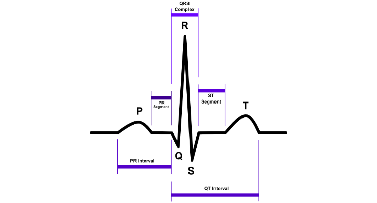
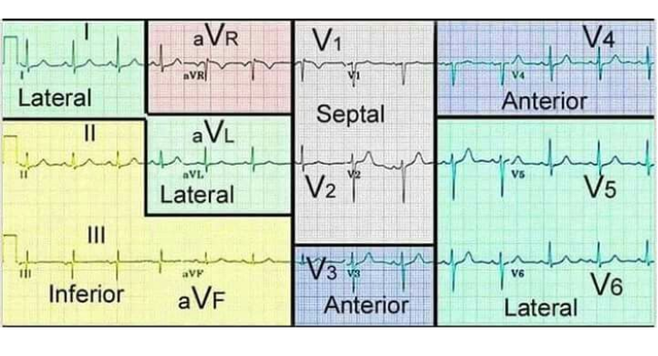
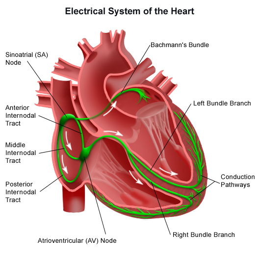

-
سرعة التخطيط، وهي السرعة التي يتم بها أخذ التخطيط. معرفتها مهمة لحساب أجزاء التخطيط بصورة دقيقة. أشهر السرعات المستخدمة هي
٥٠ ممبالثانية و تستخدم بشكل شائع في أوروبا و٢٥ ممبالثانية و هي السرعة المستخدمة في الولايات المتحدة الأمريكية وفي أغلب دول العالم العربي. -
يتكون التخطيط بشكل عام من عدة موجات أساسية و هي
P,Q,R,S,Tقد تكون كل الموجات ظاهرة في التخطيط و قد يحتوي التخطيط على جزء من هذه الموجات الاساسية، كما و توجد موجات اخرى قد تظهر في التخطيط سنتطرق لها لاحقا. -
موجة
Pالدالة على تفعيل الأذينينAtrial depolarization. في التخطيط الطبيعي تكون موجبة لكن في بعض الأحيان تكون سالبة فيV1 -
مجموعة موجات
QRSتدل على تفعيل البطينين. في التخطيط الطبيعي لا تزيد مدتها عن١٢٠ ملي ثانية. من المهم الأخذ في الاعتبار أنه قد لا تكون جميع هذه الموجات ظاهرة في التخطيط.Qدائما سالبة وRدائما موجبة وSسالبة. ان لم توجد أي موجة سالبة بعد الPفاعتبر هذه الموجة إذاًRو ما يليها يكونSإذا كانت سالبة. -
موجة T تدل على ارتخاء البطين
Repolaraization. في الإنسان الطبيعي تكون هذه الموجة موجبة. - في التخطيط تمثل كل مجموعة من الالكترودات قسماً معينا من القلب. اطلع على الجدول ادناه لمعرفة كل مجموعة من الالكترودات و القسم الذي تمثله.

| الالكترودات | القسم الذي تمثله |
|---|---|
II, III, AVF |
Inferior |
I, aVL, V5, V6 |
Lateral |
V3, V4 |
Anterior |
V1, V2 |
Septal |

المسافات المهمة
- المسافة ما بين
PQ، وهي المسافة التي تستغرقها النبضة الكهربية حتى تنتقل خلال الAV nodeو منها للبطينين. من المفترض أن لا تزيد هذه المسافة عن٢٠٠ ملي ثانية. زيادتها تدل على وجودAV blockمن النوع الأول. سنتطرق لانواعه لاحقا. - مسافة
QRSكما ذكرت فيما سبق أن هذه المسافة ينبغي أن لا تزيد عن ١٢٠ ملي ثانية. زيادتها عن هذا الحد يدل على وجود Block في أحد فروع ال bundle وفي هذه الحالة ما يعرف بLeft/Right bundle branch block. وسنتطرق للأنواع لاحقا. - مسافة ال
QTيتم حسابها بشكل يدوي من التخطيط إضافة لحسابها بلوغاريتمية تصحيحية تعرف بQTcذلك لأنها قد تتأثر بمدى سرعة نبضات القلب. زيادة هذه المسافة تزيد من احتمالية الإصابة بالاضطرابات القلبية البطينيه الخطيرةVT. - مسافة
RRتقيس المسافة بين كلQRSلحساب معدل ضربات القلب. من المهم معرفة إذا ما كانت كل مسافات الRRمتساوية ام لا لتشخيص بعض اضطرابات كهرباء القلب مثل ما يعرف بالرجفان الأذيني Atrial Fibrillation. - مسافة
PPتقيس مسافة النبضات الاذينية لمعرفة وجود أي نوع من انواع ال Block في البؤرة الأذينية البطينية AV node.
أساسيات كهربائية القلب

- تبدأ الشحنات الكهربائية في القلب في الإنسان الطبيعي من
SA nodeمنتقلة بعدها للAV nodeالتي تقوم بعمل مركز المراقبة للشحنات و منها عبر الHis bundleو تنقسم بعدها للRight/Left bundle branchesمنتشرة بعدها لكلا البطينين الى الPurkinje fibers. - نقطة الوصل الكهربية الوحيدة بين الأذين و البطين هي ال
AV nodeو إذا انعدمت وظيفتها بسبب من الاسباب يبدأ كل جزء من القلب ( الأذين و البطين ) بالعمل كل على حده. - كل خلية من خلايا القلب لها القدرة أن تعمل عمل منظم لضربات القلب
Pacemaker. الSA nodeفي الإنسان الطبيعي هي منظم القلب الافتراضي. - لو افترضنا لسبب من الاسباب ان ال
SA nodeاصبحت لا تعمل سوف تحاول أحد الخلايا القريبة منها اخذ وظيفتها و العمل كمنظم للقلب حتى يواصل القلب نبضه. حينها تبدأ خلايا الأذين بمحاولة أخذ وظيفة المنظم و ان فشلت تليها الAV nodeو بعدها خلايا الJunctionalما قبل الانقسام لمساري البطينين و يليها بعدها خلايا البطينين.